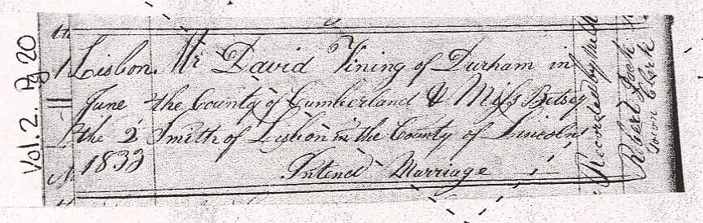
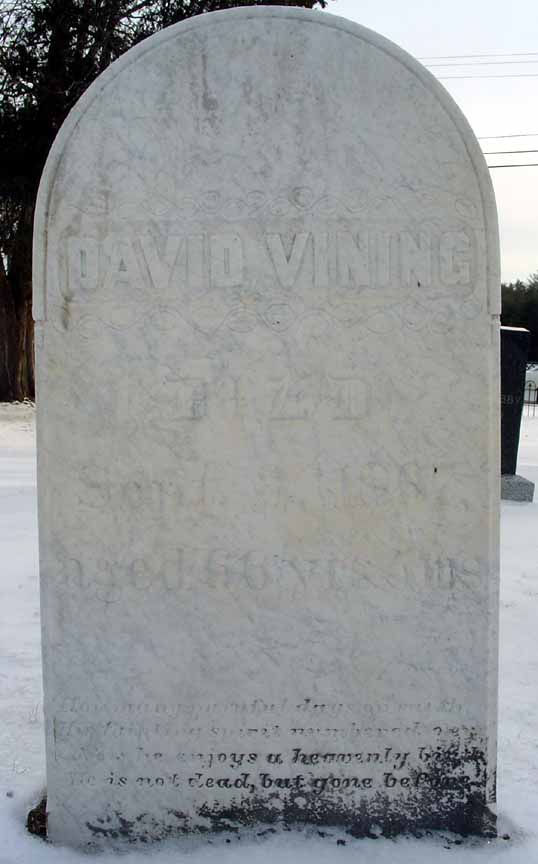
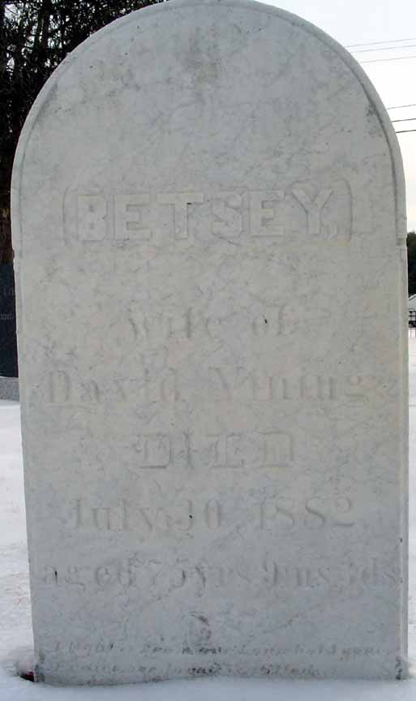
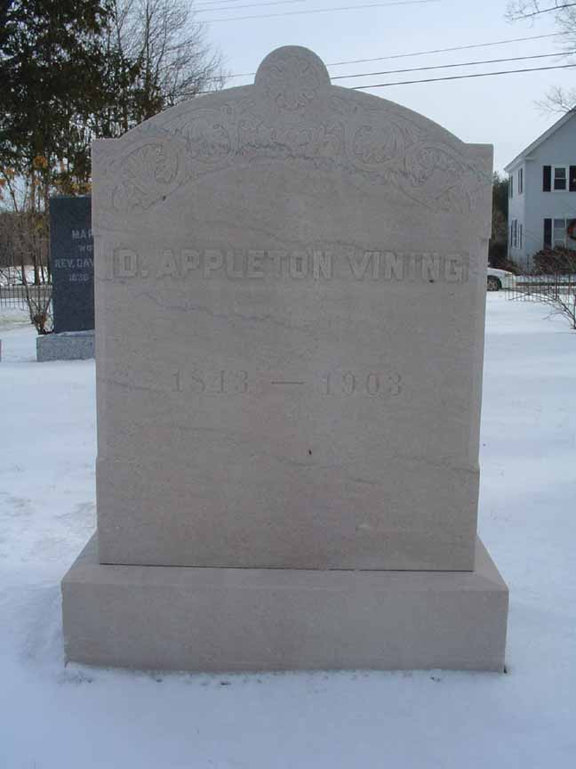

Marriage Data
Marriage intentions of David Vining and Betsey Smith, from Lisbon, Maine, town records. The dashed diagonal lines in the marriage intentions record are placed there by the town of Lisbon to show that it is not a certified record.
Census Data
| 1840 | 1850 | 1860 | 1870 | 1880 | 1890 | |
| David Vining | ? | 49 | 59 | dead | ||
| Betsey (Smith) Vining | ? | 43 | 53 | 63 | 73 | dead |
| James Vining | ? | 16 | 26 | married and living in separate household | ||
| Mahala S. Vining | ? | 14 | married and living in separate household | |||
| Maria C. Vining | ? | 14 | 24, married and living in this household | |||
| David Appleton Vining | 7 | 26 [sic] | 26 | 37 | ? |


Death Data
Gravestones of David Vining and Betsey (Smith) Vining, in the Lisbon Cemetery, Lisbon, Androscoggin County, Maine:

